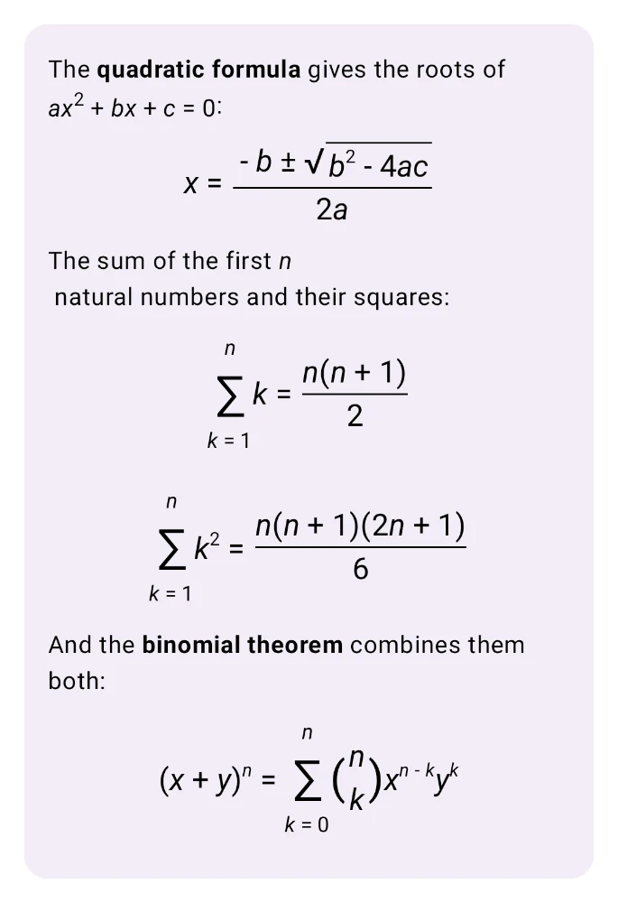
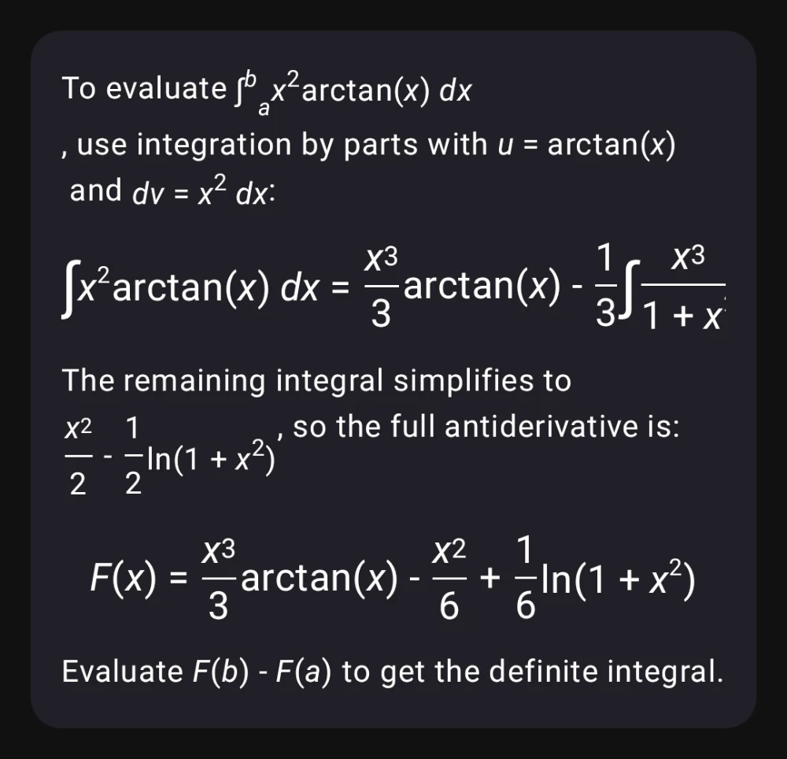
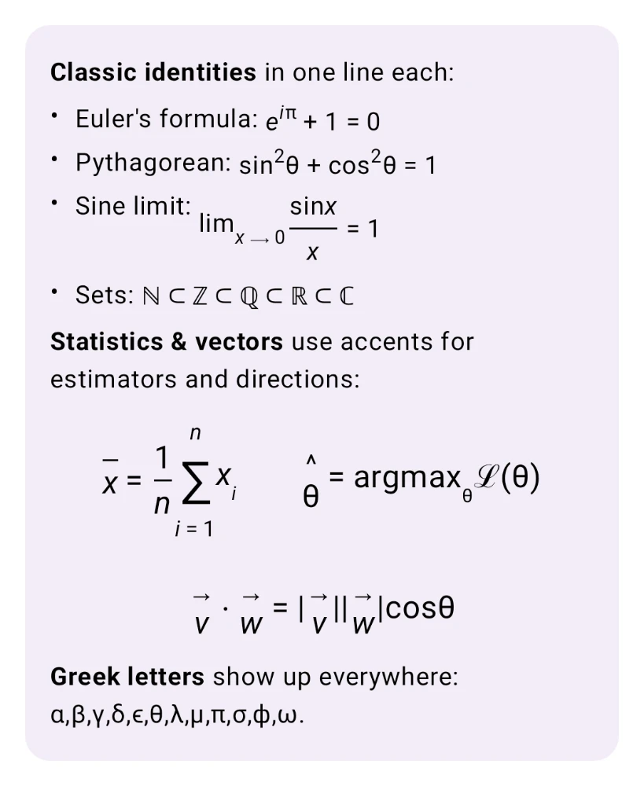
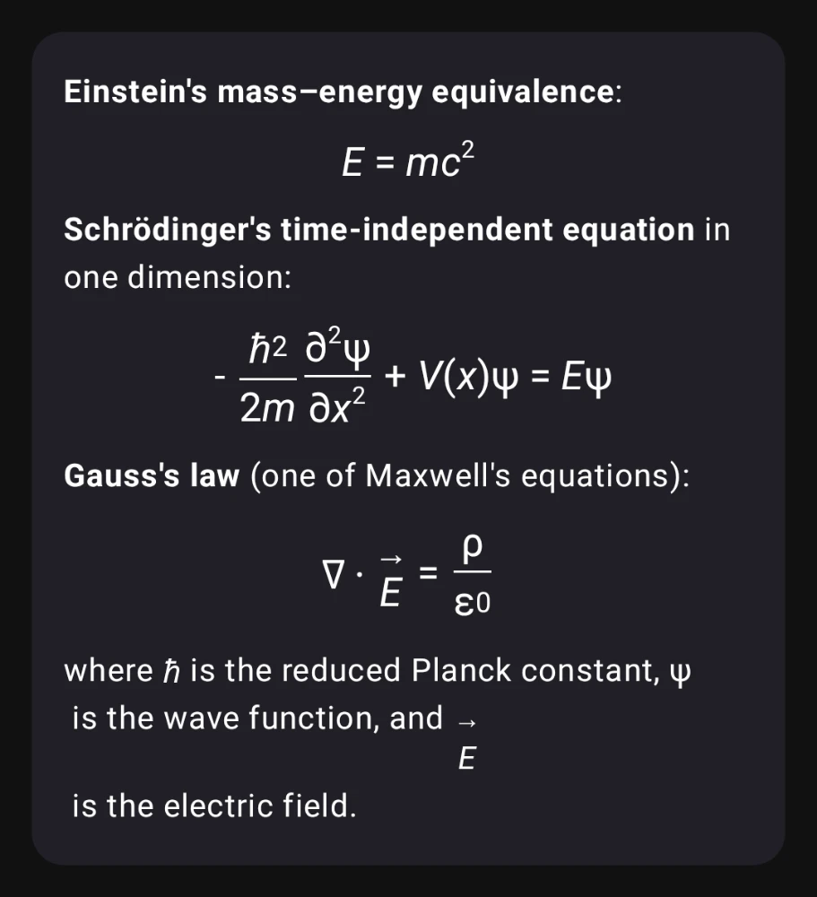
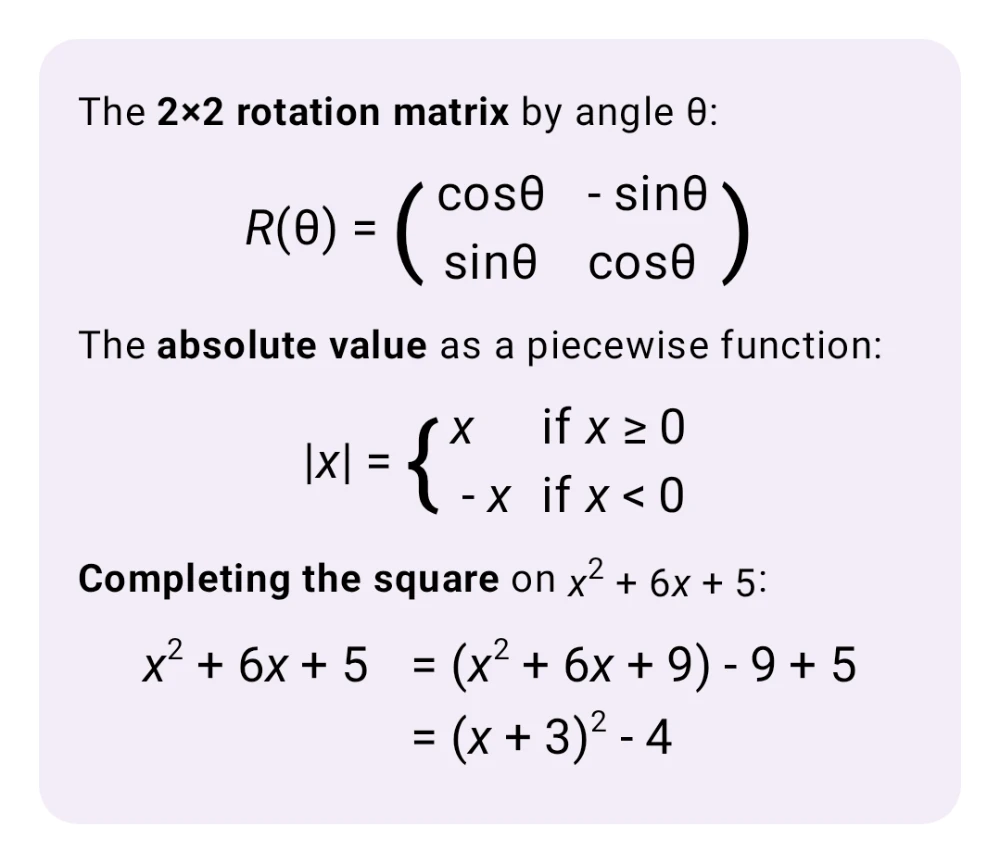

LaTeX Math, Rendered Natively on Your Device
Fractions, integrals, matrices, Greek letters, all without a WebView.
Kai parses LaTeX straight from the model stream and typesets formulas with native Compose Multiplatform layouts. There's no MathJax, no KaTeX, and no embedded browser. Formulas stay themed and aligned with the rest of your chat, and everything works offline on Android, iOS, macOS, Windows, Linux, and Web.
See it in action
Five conversations covering algebra, calculus, classic identities, physics, and linear algebra. Every formula is rendered on-device from the model's raw LaTeX output.

Algebra & series
Quadratic formula with a stretched square root, nested fractions, summation limits stacked above and below ∑, and the binomial theorem with proper \binom delimiters.

Calculus
Indefinite and definite integrals, integration by parts, and worked antiderivatives — including differentials dx, limits of integration as subscripts on ∫, and the function name arctan typeset upright.

Classic identities & notation
Euler's formula, the sine limit with \lim, \mathbb set inclusions ℕ ⊂ ℤ ⊂ ℚ ⊂ ℝ ⊂ ℂ, accented vectors, and the full Greek alphabet.

Physics equations
Einstein's E = mc², the Schrödinger equation with reduced Planck constant ℏ and partial derivative ∂, and Gauss's law with the del operator ∇ and a vector accent on E.

Matrices & piecewise
A pmatrix rotation matrix with parentheses scaled to row count, an |x| absolute value as a left-aligned cases environment, and a multi-line aligned derivation with the equals signs kept in column.
Why a native LaTeX renderer?
Most AI chat apps punt math rendering to MathJax in a WebView. Kai handles it natively, and the difference is visible.
Themed and aligned
Formulas inherit your Material 3 typography, content color, and dark-mode palette. Fractions sit on the same baseline as the surrounding paragraph text, with no iframe border and no color mismatch.
No WebView, no JS
Everything runs in Kotlin and Compose. There's no MathJax runtime, no KaTeX bundle, and no WebView hop, so the renderer adds no measurable memory or network overhead and works in airplane mode.
Every platform
Android, iOS, macOS, Windows, Linux, and Web all share the same Kotlin Multiplatform code path, so formulas render identically on your phone and your laptop.
Supported LaTeX features
Scoped to the subset of LaTeX that real LLM output actually uses. Small enough to stay fast, wide enough to cover what models emit in practice.
| Category | What works | Example |
|---|---|---|
| Delimiters | Inline $…$ and \(…\), display $$…$$ and \[…\], \left / \right stretching |
\left( \frac{a}{b} \right) |
| Fractions & radicals | \frac, \dfrac, \tfrac, \binom, \sqrt, n-th roots |
\sqrt[3]{x+1} |
| Scripts | Sub/superscripts, primes (x', x''), stacked multi-level scripts |
x_{i+1}^{2n} |
| Big operators | \sum, \prod, \coprod, \int, \iint, \iiint, \oint, \bigcup, \bigcap — with display-mode limits above/below |
\sum_{k=1}^{n} k^2 |
| Matrices | matrix, pmatrix, bmatrix, Bmatrix, vmatrix, Vmatrix, cases, aligned / align |
\begin{pmatrix}a & b\\c & d\end{pmatrix} |
| Accents | \hat, \bar, \vec, \tilde, \dot, \ddot, widening variants \overline, \widehat, \widetilde |
\hat{p} = \bar{x} + \vec{v} |
| Text styles | \mathbf, \mathit, \mathrm, \mathbb, \mathcal, \boldsymbol, \text |
\mathbb{R}^n |
| Functions | Upright names: \sin, \cos, \tan, \log, \ln, \exp, \lim, \max, \min, \det, \gcd, more |
\lim_{x \to 0} \frac{\sin x}{x} |
| Symbols | Full Greek alphabet, \infty, \partial, \nabla, \forall, \exists, \in, \subset, \leq, \geq, arrows, and more |
\forall \epsilon > 0 |
| Spacing | \,, \:, \;, \!, \quad, \qquad |
x \, dx |
Unknown commands degrade to their literal \name text, so the renderer never crashes on malformed input. Unterminated display fences emit whatever arrived so far, which is why math stays readable while the model is still streaming.
How it works under the hood
A small, self-contained pipeline: parser, atom tree, and Compose renderer.
What Kai does
- Tokenize LaTeX into a math atom tree (fractions, scripts, big ops, delimiters, accents, matrices)
- Map
\alpha,\sum,\leq, and friends to Unicode glyphs - Render each atom with native Compose
Layout,Row, andColumnprimitives - Collapse inline runs into a single
Textfor selection and copy - Wrap display math in a horizontal scroll container so wide formulas don't squish
What Kai skips on purpose
- Embed a browser, MathJax, or a KaTeX bundle
- Ship a full TeX engine — unknown commands render as
\nameliteral text - Require a network roundtrip for rendering
- Overfit to formulas from one platform — the same code runs on every target
The source is in composeApp/src/commonMain/kotlin/com/inspiredandroid/kai/ui/markdown/math/ on GitHub, under a permissive license. If you want LaTeX in your own Compose Multiplatform app, it's a short file to borrow.
LaTeX rendering FAQ
Does Kai use MathJax or KaTeX?
No. Kai has its own LaTeX parser and renderer written in Kotlin. It builds native Compose Multiplatform layouts directly, with no WebView, no JavaScript runtime, and no browser-based math engine.
Which LaTeX delimiters does Kai support?
Inline math uses $…$ or \(…\). Display math uses $$…$$ or \[…\]. The inline dollar form follows KaTeX rules: no space directly after the opener or before the closer, and no digit right after the closer. That way, currency like $5 – $3 won't be mistaken for a formula.
Does math rendering work offline?
Yes. The parser and renderer run entirely on-device. Whether the model is local (Gemma 4 via LiteRT) or a cloud API, the math layout is produced locally with no network roundtrip.
Which LaTeX environments are supported?
matrix, pmatrix, bmatrix, Bmatrix, vmatrix, Vmatrix, cases, aligned, align, and their starred variants. Matrix delimiters scale automatically with row count.
What happens with malformed or streaming LaTeX?
The parser is tolerant by design. Unknown commands render as their literal \name text. Unmatched braces close at end-of-input. Unterminated $$ or \[ fences emit whatever has arrived so far, so formulas stay readable mid-stream while the model is still typing.
Can I select and copy formulas?
Yes. Inline runs (letters, symbols, scripts, styled text) collapse into a single Text composable, so selection and copy work natively. Structural atoms like fractions, radicals, and matrices render as their own composables for correct layout.
Does it work with on-device Gemma 4?
Yes. Math rendering is independent of the model. If you're running Gemma 4 locally and the model emits LaTeX, Kai typesets it the same way as with any cloud provider.